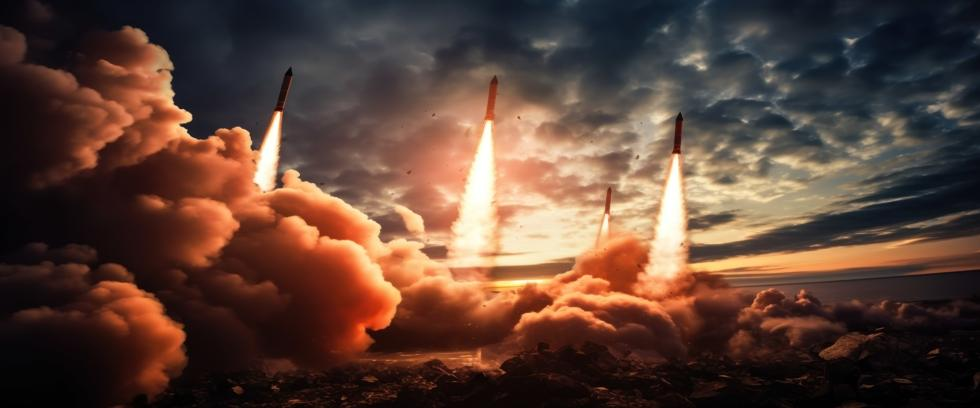

In popular culture, the idea of a red button that launches nuclear missiles has become a symbol of ultimate power. But behind the metaphor is a complex system of command and control, nuclear protocol, and people. Understanding who has the authority—and how decisions are made—reveals both the safeguards and the risks built into the nuclear age.
The Chain of Command: Not Always the Same
Nuclear command and control systems differ from country to country. In the United States, the president alone has the legal authority to order a nuclear strike. The process is designed to be fast, just minutes from the decision to launch.
In Russia, the president also holds sole launch authority, but the system includes additional nuclear communications briefcases called chegets, which are carried by select military officials. Those briefcases are linked to a secure network, and orders are verified through a multi-step process. Still, a single individual’s decision sets the machinery in motion, with little chance that the president’s order will not be carried out.
In England and France, the Prime Minister and President also hold sole authority to use nuclear weapons. While the decision may involve Cabinet advice in the UK, protocol is based on the US model, where no one has the authority to override the Prime Minister’s decision. The French nuclear protocol is similar. While consultation with military chiefs of staff may be part of the president’s decision to use nuclear weapons, it is not required.
In China, the system is more centralized and tightly controlled by the Central Military Commission, currently led by Chinese President Xi Jinping. Historically, China maintained a doctrine of deliberate response, favoring second-strike capability as the primary deterrent. However, the expansion of China’s nuclear arsenal and the modernization of command and control systems have introduced more ambiguity around Chinese nuclear protocol.
Nuclear states such as India and Pakistan maintain different levels of civilian and military oversight. In India, the Nuclear Command Authority is chaired by the Prime Minister but involves both civilian and military branches. Pakistan’s nuclear command is believed to rely more heavily on the military, though exact structures are less transparent. Little information exists about nuclear launch procedures in the closed society of North Korea.
These differences matter. In countries where military leadership plays a dominant role, decision-making may be shaped by strategic doctrine rather than political caution. In democracies, civilian oversight provides a check, but also introduces political variables during a crisis.
Human Judgment—and Human Error
Despite the layers of protocol, humans remain at the center of these systems. That means judgment, interpretation, and even emotion can play a critical role in nuclear decision-making. This has created several close calls in the past, including false alarms and misread signals.
Early-warning systems can fail, and decision-makers may have only minutes to respond. The pressure to act quickly increases the risk of miscalculation, meaning one flawed assumption could lead to an irreversible catastrophe.
Even well-designed systems are vulnerable to fatigue, bias, or confusion under stress. In 1983, Soviet officer Stanislav Petrov chose not to report what early warning systems indicated was an American ICBM attack. In so doing, he likely prevented the destruction of our civilization and the death of nearly every human being on Earth. Petrov’s reasoning was sound, but violated established protocol, highlighting the paradox of human oversight.
The Role of Technology—and Its Limits
Automation is increasingly integrated into nuclear command systems. Some nations are exploring AI-assisted tools that manage early-warning data and evaluate threat scenarios. However, reliance on mathematical algorithms introduces new vulnerabilities that may go unnoticed by human analysts.
Automated systems can malfunction, and AI cannot yet fully understand political nuance or human intent. False positives, equipment errors, or even hackers could trigger inappropriate alerts, potentially leading to tragic consequences. And while some technology improves verification speed, it may also affect human evaluation and deliberation. The goal of deterrence is stability, not acceleration. Yet faster systems could push leaders into faster decisions, with less time to question, verify, or potentially de-escalate.
Why This Matters Now
Today’s nuclear risks are shaped not only by the size of nuclear arsenals but by how decisions are made. As global tensions rise, and arms control frameworks weaken, understanding who has the authority—and how it could be misused—is critical. The threat may lie as much in flawed systems as it does in hostile intent.
Power in the nuclear age is not just about weapons, but about procedure, pressure, and perception. Systems are only as reliable as their safeguards and the people behind them. Transparency, diplomacy, and restraint are more vital than they were in the past.
At Our Planet Project Foundation, we believe that demystifying nuclear command and control is a step toward greater accountability. These systems are hidden from public view, yet their consequences are shared by everyone on Earth. Knowing who holds the button—and how close they are to pressing it—matters more than ever before.